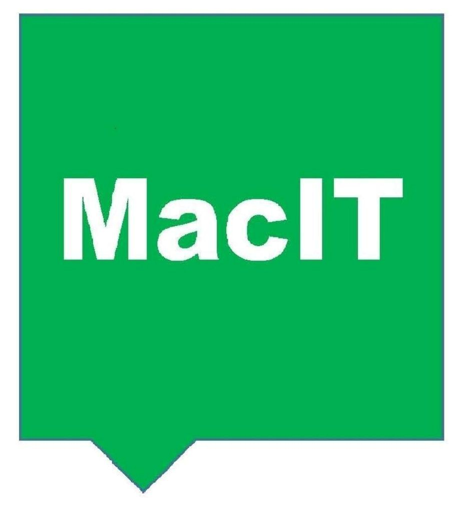

Professional onsite and remote computer support across Auckland.
Passion for People
Hi, I'm Jarrod, founder of MAC IT Computer Services.
With experience supporting home users, small businesses, government organisations and not-for-profit groups, I focus on providing practical solutions, clear advice and reliable support.
Whether you need help with Microsoft 365, Apple Mac systems, Windows PCs, networking, cybersecurity or general troubleshooting, my goal is simple: making technology easier to understand and use.
“Technology is only as powerful as the good it enables. My job is to make that power work for you.”— Jarrod
"Jarrod is simply amazing. The most helpful tech guy you could wish for. Call him up, you won't be disappointed."
Bob Mitchener"Jarrod is a fantastic technician, a great communicator and a man of integrity. Don't hesitate to call him."
Erica Steele"Absolutely awesome service. Jarrod fixed the issue over the phone and followed up with a home visit."
Tanya Le Fleming BurrowPhone: 021 0252 3262
Email: maccomputers@icloud.com
Auckland, North Shore, Hibiscus Coast, Whangaparāoa, Rodney and surrounding areas.